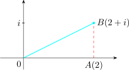
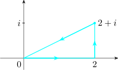
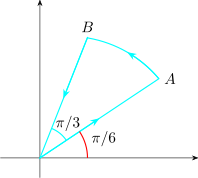
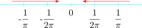

6.2 Contour Integration
Let \(\, z_{i-1} = z(s_{i-1})\,\), writing \(\Delta z_i = z_i - z_{i-1}\) and taking \(z_i^*\) to be any point on the arc \(C_i\), we form a sum
\[S_n = \sum ^n_{i=1} f\big (z^*_i\big )\Delta z_i\]
Let \(f(z)\) be such that when \(n\longrightarrow \infty \quad \max \left |\Delta z_i\right | \longrightarrow 0\), the complex number \(S_n\) approaches a limit \(S\) which is independent of the way
the curve is partitioned.
We define \(S\) as the integral of \(f(z)\) with respect to \(z\) taken as the contour \(C\) denoted by \[S = \int _r f(z)dz = \lim \limits _{n \rightarrow \infty } \Bigg [\sum ^n_{i = 1} f\big (z^*_i\big )\Delta z_i \Bigg ]\]
On the contour \(C\), we write \(\quad z(t) = x(t) + iy(t),\quad \alpha \leq t\leq \beta \,\cdots \,(1)\)
Let \(\,f(t) = u(x,y) + iv(x,y)\,\) where \(u(x,y) = u\big (x(t), y(t)\big ),\, v(x,y) = v\big (x(t), y(t)\big )\) are piecewise continuous functions of \(t\). Then
\[\boxed {\int _Cf(z) dz = \int ^{\beta }_{\alpha } f(z(t))\,z'(t)dt\,\cdots \quad (2)\\}\]
Since \(f(z(t))z'(t) = \big [u(x(t),y(t)) + iy(x(t),y(t))\big ]\big (x'(t) + iy'(t)\big )\) substitute this in \((2)\) then \[\int _Cf(z)dz = \int ^{\beta }_{\alpha } \big (ux' - vy'\big )dt + i\int ^{\beta }_{\alpha }\big (vx' - uy'\big )dt\,\cdots \, (3)\]
In terms of the \(x\) and \(y\) as variables we have
\[\int _C f(z)dz = \int _C udx - vdy + i \int _Cvdx + udy\]
Proposition 6.3. Let \(C\) be a piecewise smooth curve, and suppose that \(f\) is continuous on \(C\), then
- 1.
- \(\displaystyle {\int _Cf(z)dz = - \int _{C^-}f(z)dz}\)
- 2.
- If \(\gamma \in \mathbb {C}\), then \(\displaystyle {\int _Cf(z)dz = \int \limits _{C + \gamma } f(z - \gamma )dz}\)
- 3.
- \(\displaystyle {\int _C Kf(z)dz = K\int _Cf(z)dz}, \,K\) is constant.
- 4.
- \(\displaystyle {\int _C\big [\alpha f(z)dz + \beta g(z)\big ]dz = \alpha \int _Cf(z)dz + \beta \int _Cg(z)dz}\)
If \(C\) comprises of \(n\) smooth arcs \(C_1,C_2, \ldots , C_n\) joined end to end, then \[\int _Cf(z)dz = \int \limits _{C_1} f(z)dz + \cdots + \int \limits _{C_n} f(z)dz = \sum ^n_{i = 1} \Bigg [\int \limits _{C_i} f(z)dz\Bigg ]\]
- 5.
- If on a contour \(C\) of length \(L, \,\left |f(z)\right |\leq \mu \), then \begin {align*} \left |\int _Cf(z)dz\right | & \leq \int _C\left |f(z)\right |dz\\ & \leq \mu \int _Cdz\\ & = \mu L\\\\ \end {align*}
Example 6.4. Consider the following diagram

Evaluate \(\displaystyle {I = \int z^2 dz}\) on a smooth curve from point \(O\) to point \(B\).
Solution
If we evaluate \(I\) along the straight line \(OB\) with equation. We call this \(\displaystyle {I_1 = \int \limits _{OB}z^2dz}\) \(z = x + iy\) in terms of \(y\). \begin {align*} z^2 & = (x + iy )^2 = (x^2 - y^2) + i 2xy\quad 0\leq y\leq 1\\ & = (4y^2 - y^2) + i (2(2y)y)\\ & = 3y^2 + i4y^2 \end {align*}
\begin {align*} I_1 & = \int ^1_0(3y^2 + 4y^2)(2+ i)dy\\ & = (3 + 4i)(2 + i) \int ^1_0 y^2 dy\\ & = \frac {2}{3} + \frac {11}{3}i\\\\ \end {align*}
OR, we may evaluate \(I\) via the path \(OAB\), call it \(I_2\) \[I_2 = \int \limits _{OA}z^2dz + \int \limits _{AB}z^2dz\]
Now, on \(OA,\, z(x) = x + 0i = x,\quad 0 \leq x \leq 2\)
On \(AB,\, z(y) = 2 + yi,\quad 0\leq y \leq 1\) \begin {align*} I_2 & = \int ^2_0x^2dx + \int ^1_0(2 + iy)^2dy\\ & = \frac {8}{3} + i\Bigg [\int ^1_0(4 - y^2)dy + 4i\int ^1_0ydy\Bigg ]\\ & = \frac {8}{3} + i \Big (4 - \frac {1}{3}\Big ) - 2\\ & = \frac {2}{3} + \frac {11}{3}i\\ \end {align*}

Note that \(I_1 = I_2\), thus the value of \(I\) is independent of path.
So if the question was to evaluate \(\displaystyle {\int z^2 dz}\) around the closed path
We have \(I_1 - I_2 = 0\)
Example 6.5. Evaluate \(\displaystyle {\int _C \frac {dz}{z - z_0}}\) where \(C\) is the contour around the region \(\,R_1 < \left |z - z_0\right | < R_2\).
Solution

Clearly, \(C\) denotes the inner and outer boundaries of the region \begin {align*} \int _C \frac {dz}{z - z_0} & = \int _{C_1} \frac {dz}{z - z_0} + \int _{C_2} \frac {dz}{z - z_0}\\\\ & = \int ^{2\pi }_0\frac {iR_1e^{i\theta }d\theta }{R_1e^{i\theta }} + \int ^{2\pi }_0 \frac {iR_2e^{i\theta }d\theta }{R_2e^{i\theta }}\\\\ & = i\int ^{2\pi }_0d\theta + i \int ^{2\pi }_0 d\theta \\\\ & = 2\pi i - 2\pi i \\ & = 0\\\\ \end {align*}
Example 6.6. Evaluate \(\displaystyle {\int \big ( z + 2\overline {z}\big )dz}\) where \(C\) is the contour given by

Here, contour \(C\) is \(OABC\).
Example 6.7. Evaluate \(\displaystyle {\int \frac {dz}{z^{1/4}}}\) where \(C\) is the circle \(\left |z\right | = 1\)
- 1.
- where the branch used is the axe \(dz\). Where \(1^{1/4} = -i\),
- 2.
- and the integration is to start from \(z = i\).
Working
We make \(z^{1/4}\) single valued if \(z = re^{i\theta }\), we see that for branches of \(z^{1/4} = w\) are
\[ w_k = r^{1/4}\exp \Bigg [i\frac {\theta _0 + 2k\pi )}{4} \Bigg ],\quad k = 0, 1, 2, 3\]
Setting \(z= 1\), so that \(\left |z\right | = 1,\quad Arg(z) = 0\)
\begin {align*} \text {We get}\quad w_k(1) & = (1)^{1/4}\exp \Bigg (\frac {k\pi i}{2}\Bigg )\, , \quad k = 0, 1, 2, 3\\\\ w_0(1) & = 1\\ w_1(1) & = i\\ w_2(1) & = -1\\ w_3(1) & = -i \end {align*}
Now, since the center involves \(\left |z\right | = 1\), or \(C\), we have \(z = e^{i\theta }\) and \(dz = ie^{i\theta }d\theta \)
- 1.
- The branch to be selected is \begin {align*} z^{1/4} & = w_3(1) = r^{1/4} \exp \Bigg (i\Bigg (\frac {\theta + 2(3)\pi }{4}\Bigg )\Bigg )\\ & = r^{1/4} \exp \Big (\frac {i\theta _0}{4}\Big ) \exp \Big (\frac {i6\pi }{4}\Big )\\ & = \exp \Big (\frac {i\theta _0}{4}\Big )(-i)\\ & = (-i)\exp \Big (\frac {i\theta _0}{4}\Big )\\ \end {align*}
\begin {align*} \text {Thus}\quad \int _C \frac {1}{z^{1/4}}dz & = \int _{\pi /2}^{5\pi /2}\frac {i e^{i\theta }}{-ie^{i\theta /4}}d\theta \\\\ & = - \int _{\pi /2}^{5\pi /2} e^{i3\theta /4}d\theta \\ \end {align*}
- 2.
- Start the integration from \(z = 1\) \begin {align*} \int _C \frac {1}{z^{1/4}}dz = \int ^{2\pi }_0 \frac {i e^{i\theta }}{-ie^{i\theta /4}}d\theta \\ \end {align*}
Examples
- 1.
- Evaluate \(\displaystyle {\int _C \ln \overline {z}\,dz}\) where \(C\) is the unit circle \(\left |z\right | = 1\). Use the branch \(\ln 1 = 4\pi i\) and integration starts from \( z = 1\).
- 2.
- Show that \(\displaystyle {\left |\displaystyle {\int _C \frac {e^{iz}}{z}}\right |\leq 2\pi e^R}\) where \(C\) is \(\left |z\right | = R\)
Questions on this section
Stuck on something here? Ask below and it stays attached to this topic.